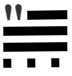

Founder and Majority Owner of Cryptocurrency Exchange Bitzlato Charged
Department of Justice, January 18, 2023 |

|
Founder and Majority Owner of Cryptocurrency Exchange Charged with Processing Over $700 Million of Illicit Funds
The founder and majority owner of a cryptocurrency exchange, Bitzlato Ltd. (Bitzlato), was arrested last night in Miami for his alleged operation of a money transmitting business that transported and transmitted illicit funds and that failed to meet U.S. regulatory safeguards, including anti-money laundering requirements.
Anatoly Legkodymov, 40, a Russian national who resides in Shenzhen, People’s Republic of China, is scheduled to be arraigned this afternoon in the U.S. District Court for the Southern District of Florida. French authorities and the U.S. Department of the Treasury’s Financial Crimes Enforcement Network (FinCEN) are taking concurrent enforcement actions.
“Today the Department of Justice dealt a significant blow to the cryptocrime ecosystem,” said Deputy Attorney General Lisa O. Monaco. “Overnight, the Department worked with key partners here and abroad to disrupt Bitzlato, the China-based money laundering engine that fueled a high-tech axis of cryptocrime, and to arrest its founder, Russian national Anatoly Legkodymov. Today’s actions send the clear message: whether you break our laws from China or Europe – or abuse our financial system from a tropical island – you can expect to answer for your crimes inside a United States courtroom.”
“As alleged, the defendant helped operate a cryptocurrency exchange that failed to implement required anti-money laundering safeguards and enabled criminals to profit from their wrongdoing, including ransomware and drug trafficking,” said Assistant Attorney General Kenneth A. Polite, Jr. of the Justice Department’s Criminal Division. “The National Cryptocurrency Enforcement Team’s tremendous efforts to disrupt Bitzlato and arrest the defendant demonstrate that we will continue to work with our partners – both foreign and domestic – to combat cryptocurrency-fueled crimes, even if they transcend international borders.”
According to court documents, Legkodymov is a senior executive and the majority shareholder of Bitzlato, a Hong Kong-registered cryptocurrency exchange that operates globally. Bitzlato has marketed itself as requiring minimal identification from its users, specifying that “neither selfies nor passports [are] required.” On occasions when Bitzlato did direct users to submit identifying information, it repeatedly allowed them to provide information belonging to “straw man” registrants.
“Institutions that trade in cryptocurrency are not above the law and their owners are not beyond our reach,” said U.S. Attorney Breon Peace for the Eastern District of New York. “As alleged, Bitzlato sold itself to criminals as a no-questions-asked cryptocurrency exchange, and reaped hundreds of millions of dollars’ worth of deposits as a result. The defendant is now paying the price for the malign role that his company played in the cryptocurrency ecosystem.”
As a result of these deficient know-your-customer (KYC) procedures, Bitzlato allegedly became a haven for criminal proceeds and funds intended for use in criminal activity. Bitzlato’s largest counterparty in cryptocurrency transactions was Hydra Market (Hydra), an anonymous, illicit online marketplace for narcotics, stolen financial information, fraudulent identification documents, and money laundering services that was the largest and longest running darknet market in the world. Hydra users exchanged more than $700 million in cryptocurrency with Bitzlato, either directly or through intermediaries, until Hydra was shuttered by U.S. and German law enforcement in April 2022. Bitzlato also received more than $15 million in ransomware proceeds.
“The FBI will continue to pursue actors who attempt to mask their criminal activity behind keyboards and use means such as cryptocurrency to evade law enforcement,” said Associate Deputy Director Brian Turner of the FBI. “We, along with our federal and international partners, will work relentlessly to disrupt and dismantle these types of criminal enterprises. Today’s arrest should serve as a reminder the FBI will impose risk and consequences upon those who engage in these activities.”
“As alleged today, Legkodymov knowingly allowed Bitzlato to become a perceived safe haven for funds used for and resulting from a variety of criminal activities,” said Assistant Director in Charge Michael J. Driscoll of the FBI New York Field Office. “The FBI and our partners remain steadfast in our commitment to keeping cryptocurrency markets – as with any financial market – free from illicit activity. Today’s action should serve as an example of this commitment as Legkodymov will now face the consequences of his actions in our criminal justice system.”
As alleged in the complaint, Bitzlato’s customers routinely used the company’s customer service portal to request support for transactions with Hydra, which Bitzlato often provided, and admitted in chats with Bitzlato personnel that they were trading under assumed identities. Moreover, Legkodymov and Bitzlato’s other managers were aware that Bitzlato’s accounts were rife with illicit activity and that many of its users were registered under others’ identities. For instance, on May 29, 2019, Legkodymov used Bitzlato’s internal chat system to write to a colleague that Bitzlato’s users were “known to be crooks,” using others’ identity documents to register their accounts. Legkodymov was repeatedly warned by colleagues that Bitzlato’s customer base consisted of “addicts who buy drugs at [] Hydra” and “drug traffickers,” with one senior executive even stressing that Bitzlato should combat drug dealers only “nominally,” to avoid hurting the company’s bottom line. An internal spreadsheet saved in Bitzlato’s shared management folder encapsulated the company’s view of itself: “Positives: No KYC. . . . Negatives: Dirty money. . . .”
As alleged in the complaint, although Bitzlato claimed not to accept users from the United States, it did substantial business with U.S.-based customers, and its customer service representatives repeatedly advised users that they could transfer funds from U.S. financial institutions. Moreover, Legkodymov – who himself administered Bitzlato from Miami in 2022 and 2023 – received reports reflecting substantial traffic to Bitzlato’s website from U.S.-based Internet Protocol addresses, including over 250 million such visits in July 2022.
Legkodymov is charged with conducting an unlicensed money transmitting business. If convicted, he faces a maximum penalty of five years in prison.
Concurrent with the arrest announced today, French authorities, working with Europol and partners in Spain, Portugal, and Cyprus, dismantled Bitzlato’s digital infrastructure, seized Bitzlato’s cryptocurrency, and took other enforcement actions.
In addition, the Treasury Department’s FinCEN announced an Order pursuant to section 9714(a) of the Combating Russian Money Laundering Act, as amended, identifying Bitzlato as a “primary money laundering concern” in connection to Russian illicit finance. The order imposes a special measure prohibiting certain transmittals of funds involving Bitzlato by any covered financial institution.
National Cryptocurrency Enforcement Team (NCET) Trial Attorneys Alexander Mindlin, Scott Meisler, and Matthew Blackwood of the Justice Department’s Criminal Division and Assistant U.S. Attorney Artie McConnell for the Eastern District of New York are prosecuting the case, with assistance from Paralegal Specialist Mary Clare McMahon.
The Justice Department investigated this case in close coordination with French law enforcement authorities and the Treasury Department’s FinCEN, both of which took separate enforcement actions today under their respective authorities. The Justice Department’s Office of International Affairs and the FBI’s Legal Attaché in France provided critical assistance in this case, with significant support from the department’s Cyber Operations International Liaison. The NCET and U.S. Attorney’s Office for the Eastern District of New York also extend their appreciation to the Cyber Division of the Paris Prosecution Office and to France’s Gendarmerie Nationale Cyberspace Command (Cyber Crime Investigation Unit / C3N). Assistance was also provided by the Customs and Border Protection, the Transportation Safety Administration, and the New York City Police Department. EUROPOL and Dutch and Belgian authorities have contributed to the overall investigation with respect to operational expertise, coordination, and information-sharing.
The NCET was established to combat the growing illicit use of cryptocurrencies and digital assets. Under the Criminal Division, the NCET conducts and supports investigations into individuals and entities that enable the use of digital assets to commit and facilitate a variety of crimes, with a particular focus on virtual currency exchanges, mixing and tumbling services, and infrastructure providers. The NCET also sets strategic priorities regarding digital asset technologies, identifies areas for increased investigative and prosecutorial focus, and leads the department’s efforts to collaborate with domestic and foreign government agencies as well as the private sector to aggressively investigate and prosecute crimes involving cryptocurrency and digital assets.
A criminal complaint is merely an allegation. All defendants are presumed innocent until proven guilty beyond a reasonable doubt in a court of law.
Discussion Questions
-
Bizlato is an example of a cryptocurrency exchange being charged with a crime when it is utilized by illicit operators. When should a foreign exchange be subject to U.S. law?
Consent Order in the matter of Coinbase, Inc.
NEW YORK STATE
DEPARTMENT OF FINANCIAL SERVICES
ONE STATE STREET
NEW YORK, NEW YORK 10004
In the Matter of: |
CONSENT ORDER
The New York State Department of Financial Services (the “Department”) and Coinbase, Inc. (“Coinbase” or the “Company”) agree to resolve the matters described herein without further proceedings.
WHEREAS, in 2015, the Department became the first financial regulator to establish a licensing and regulatory regime for virtual currency businesses;
WHEREAS, this licensing regime subjects applicants to rigorous standards in order to allow them to do business in New York State in a manner that is protective of the safety and soundness of the financial system as well the interests of New York consumers;
WHEREAS, as part of this regulatory regime, the Department conducts robust examinations and oversight of licensed entities to ensure that they operate in accordance with all Department regulations;
WHEREAS, Coinbase, along with its parent and affiliates, operates a cryptocurrency trading platform with more than 100 million users worldwide;
WHEREAS, Coinbase was licensed by the Department to engage in virtual currency business activity and as a money transmitter in New York State in 2017;
WHEREAS, in 2020, the Department conducted a safety and soundness examination of Coinbase for the period July 1, 2018, through December 31, 2019, and found serious deficiencies in Coinbase’s compliance function across multiple areas (the “Examination”);
WHEREAS, as a result of the Examination findings, the Department required Coinbase to hire an independent consultant (“Independent Consultant”) to assess its Bank Secrecy Act / Anti-Money Laundering (“BSA/AML”) and Office of Foreign Assets Control (“OFAC”) Sanctions Program (together, the “Compliance Program”), and to provide recommendations on areas for improvement of the Examination shortcomings, and the Independent Consultant provided a report in February 2021, following which Coinbase adopted a remediation plan to enhance its Compliance Program;
WHEREAS, in 2021, the Department began an enforcement investigation into the various compliance issues identified during the Examination;
WHEREAS, notwithstanding that Coinbase undertook remedial efforts in response to the Examination, Coinbase’s compliance system failed to keep up with the dramatic and unexpected growth of Coinbase’s business, and, by the end of 2021, was overwhelmed, with a substantial backlog of unreviewed transaction monitoring alerts, exposing its platform to risk of exploitation by criminals and other bad actors;
WHEREAS, in response, in February 2022, the Department and Coinbase entered into a Memorandum of Understanding (“MOU”) mandating that Coinbase retain an independent third party (the “Independent Monitor”) to review Coinbase’s compliance shortcomings and to assist the company to address those shortcomings;
WHEREAS, Coinbase has engaged with the Independent Monitor and has cooperated with the Department during its investigation;
WHEREAS, in August 2022 the Independent Monitor provided a report (“Monitor Report”) to the Department assessing the Company’s Compliance Program and found that Coinbase has improved its compliance systems and has made progress in remediating its compliance weaknesses albeit with further improvement required;
WHEREAS, in response to the Monitor Report and working with the Independent Monitor, Coinbase has developed a further, targeted remediation plan;
WHEREAS, the Department and Coinbase have now reached this agreement both to address the Company’s violations of law and to ensure that Coinbase completes its remediation efforts and continues to invest in improvements to support an effective and sustainable compliance program; and
NOW THEREFORE, to resolve this matter without further proceedings, pursuant to the Superintendent’s authority under Sections 39 and 44 of the New York Banking Law and Section 408 of the New York Financial Services Law, the Department finds as follows:
THE DEPARTMENT’S FINDINGS
Introduction and Procedural History
-
Respondent Coinbase is a Delaware corporation formed in May 2012 and is the owner of a cryptocurrency trading platform. It is the wholly owned subsidiary of Coinbase Global, Inc. that operates in the United States. In January 2017, the Department issued to Coinbase licenses to operate both a virtual currency business and money transmitter business in the State of New York. When it received its licenses, Coinbase signed a Supervisory Agreement with the Department whereby Coinbase agreed to be subject to the oversight of the Department.
-
In the aggregate, Coinbase’s business operations are substantial in both size and volume and are comparable to more traditional financial institutions such as large banks in terms of customer base and assets on its platform. Coinbase entities employ more than 4,000 people worldwide.
-
Coinbase’s business, customer base, and transaction volumes have grown considerably since it was licensed by the Department.
-
Beginning in May 2020, the Department conducted a supervisory examination of Coinbase for the time period July 1, 2018, through December 31, 2019 (the “Examination”). A Report of Examination (the “ROE”) detailing the results of that examination was transmitted to Coinbase’s leadership in September 2020.
-
As discussed more fully below, the Department’s Examination found significant deficiencies across Coinbase’s compliance program, including its Know-Your-Customer/Customer Due Diligence (“KYC/CDD”) procedures, its Transaction Monitoring System (“TMS”), and its OFAC screening program. The Examination also found that Coinbase failed to conduct adequate annual Anti-Money Laundering (“AML”) risk assessments since 2017, as required by 23 NYRCC 200.15(b), and that Coinbase had not provided evidence of a validation review of its TMS system, as required by 23 NYCRR 504.3(a).
-
As a result of these findings, Coinbase made commitments to the Department to improve its BSA/AML and OFAC compliance programs, including engaging an Independent Consultant. Working with the Independent Consultant, Coinbase developed a remediation plan and took steps toward improving its Compliance Program.
-
In 2021, the Department also began an enforcement investigation to determine whether legal violations had occurred as a result of Coinbase’s compliance deficiencies. The Department’s investigation uncovered substantial lapses in Coinbase’s KYC/CDD program, its TMS, and in its AML and OFAC sanctions controls systems, as well as issues concerning Coinbase’s retention of books and records, and with respect to meeting certain of its reporting obligations to the Department.
-
In late 2020 and in 2021, Coinbase did take certain steps to remediate the issues identified by the Department and the Independent Consultant. However, substantial weaknesses remained, and, over the course of 2021, it became clear that Coinbase’s compliance system was inadequate to handle the growing volume of Coinbase’s business, a situation that was exacerbated by tremendous growth in its customer base.
-
Indeed, during the course of the Department’s investigation, the compliance situation inside Coinbase reached a critical stage. By the end of 2021, Coinbase had a backlog of unreviewed transaction monitoring alerts grew to more than 100,000 (many of which were months old), and the backlog of customers requiring enhanced due diligence (“EDD”) exceeded 14,000.
-
These backlogs were exacerbated by business and operational growth occurring in 2020 through 2021. For example, Coinbase customer sign ups in May 2021 were fifteen times January 2020 levels, and monthly transactions in November 2021 were twenty-five times January 2020 levels.
-
At that time, Coinbase lacked sufficient personnel, resources, and tools needed to keep up with these alerts, and backlogs rapidly grew to unmanageable levels. This was compounded by Coinbase’s reliance in 2019 through November 2021 on an inadequate case management system for dispositioning alerts and filing.
-
Department determined that the Coinbase compliance program required further intervention. Accordingly, the Department took action, and, pursuant to an MOU entered into with Coinbase on February 10, 2022, the Department required that the Company retain an Independent Monitor, to be selected by the Department, to assess the current status of Coinbase’s Compliance Program and to assist the Company in addressing deficiencies. Following consultation with the Department, the Independent Monitor was retained in April 2022.
-
In August 2022, the Independent Monitor issued the Monitor Report on the state of Coinbase’s compliance program finding that, although Coinbase had made some progress in remediating its compliance issues, certain deficiencies persisted.
-
In response, Coinbase developed with the Independent Monitor an additional targeted remediation plan. Coinbase’s work to implement this plan is ongoing, and Coinbase continues to report its progress to the Department.
The Role of the Department and Its Regulatory Framework
-
The Department is the financial services regulator in the State of New York, and its head, the Superintendent of Financial Services, bears the responsibility of ensuring the safety and soundness of New York’s financial services industry and promoting the reduction and elimination of fraud, abuse, and unethical conduct with respect to financial institutions licensed to operate in the state. The Superintendent has the authority to conduct investigations, to bring enforcement proceedings, to levy monetary penalties, and to revoke the license of entities who have violated the relevant laws and regulations.
-
The Department developed and oversees a first-of-its-kind regulatory framework pertaining to virtual currency businesses. Companies that conduct virtual currency business activity(1) in the State of New York must be licensed to do so by the Department, through what is known as a BitLicense (or through the Department’s Limited Purpose Trust Charter), and are subject to the Department’s ongoing supervision. BitLicensees are also required to obtain a money transmitter license from the Department.
-
As the holder of both a money transmitter license and a BitLicense, Coinbase is obligated to abide by the Department’s regulations applicable to both money transmitters and virtual currency businesses. Coinbase is also obligated to comply with the requirements set forth in the Department’s transaction monitoring and sanctions filtering regulation and the Department’s cybersecurity regulation. The Superintendent has the power to seek penalties for violations of these various regulations under one or both of the New York Banking Law and/or the New York Financial Services Law.
The Virtual Currency Regulation
-
The specific obligations of virtual currency companies are set forth in Part 200 of the Superintendent’s Regulations.
-
Section 200.15 of Title 23 of the New York Codes, Rules, and Regulations, for example, requires virtual currency licensees to establish and maintain an AML program based on a risk assessment that will consider legal, compliance, financial, and reputational risks associated with the licensee’s activities, services, customers, counterparties, and geographic location. The AML program shall, at a minimum: (1) provide for a system of internal controls, policies, and procedures designed to ensure ongoing compliance with all applicable anti-money laundering laws, rules, and regulations; (2) provide for independent testing for compliance conducted by qualified internal personnel of the Licensee or a qualified external party; (3) designate a qualified individual or individuals responsible for coordinating and monitoring day-to-day compliance; and (4) provide ongoing training for appropriate personnel.
-
Section 200.15(h) requires virtual currency licensees to maintain a customer identification program, and must, at a minimum, verify the customer’s identity, to the extent reasonable and practicable, maintain records of the information used to verify such identity, including name, physical address, and other identifying information, and check customers against the Specially Designated Nationals (“SDNs”) list maintained by OFAC. Furthermore, for accounts involving foreign entities, licensees must establish enhanced due diligence policies, procedures, and controls to detect money laundering, including assessing the risk presented by such accounts based on the nature of the foreign business, the type and purpose of the activity, and the anti-money laundering and supervisory regime of the foreign jurisdiction.
-
Section 200.15(e)(3) further requires that licensees shall monitor for transactions that might signify money laundering, tax evasion, or other illegal or criminal activity and shall file Suspicious Activity Reports (“SARs”) in accordance with applicable federal laws, rules, and regulations.
-
Section 200.15(b) also requires that licensees shall conduct an initial risk assessment that will consider legal, compliance, financial, and reputational risks associated with the licensee’s activities, services, customers, counterparties, and geographic location and shall establish, maintain, and enforce an anti-money laundering program based thereon.
-
The Superintendent is empowered to impose civil monetary penalties for violations of Part 200 pursuant to Section 408(a)(2) of the New York Financial Services Law.
The Money Transmitter Regulation
-
The general regulations applicable to licensed money transmitters are found in Part 406 of the Superintendent’s Regulations, and the regulation specific to money transmitters’ obligations to maintain an anti-money laundering program is found in Part 417.
-
Section 417.2 of Title 3 of the New York Codes, Rules, and Regulations requires money transmitter licensees to establish and maintain an anti-money laundering program that complies with applicable Federal anti-money laundering law. The AML program must, at a minimum (i) provide for a system of internal controls to ensure ongoing compliance; (ii) provide for independent testing for compliance conducted by bank personnel or by an outside party; (iii) designate an individual or individuals responsible for coordinating and monitoring day-to-day compliance; and (iv) provide training for appropriate personnel.
-
Section 417.2(a) also requires money transmitter licensees to incorporate policies, procedures, and internal controls reasonably designed to assure compliance application Federal law including verifying customer identification, filing reports; creating and retaining records; and responding to law enforcement requests.
-
The Superintendent is empowered to impose civil monetary penalties for violations of Part 417 pursuant to Section 44(1) of the New York State Banking Law. The Transaction Monitoring and Filtering Program Regulation
-
Part 504 of the Superintendent’s Regulations establishes certain minimum requirements applicable to the transaction monitoring and OFAC screening systems of both bank and non-bank institutions, including money transmitters such as Coinbase.
-
Section 504.3(a) of Title 3 of the New York Codes, Rules, and Regulations requires that each regulated institution shall maintain a Transaction Monitoring Program reasonably designed for the purpose of monitoring transactions after their execution for potential Money Laundering/Terrorist Financing (“ML/TF”) violations and suspicious activity reporting. The transaction monitoring program must be based on the risk assessment of the institution; be reviewed and periodically updated at risk-based intervals to take into account and reflect changes to applicable ML/TF laws, regulations and regulatory warnings, as well as any other relevant information; appropriately match ML/TF risks to the institution’s businesses; have ML/TF detection scenarios with threshold values and amounts designed to detect potential money laundering or other suspicious or illegal activities; have end-to-end, pre-and post-implementation testing; have documentation that articulates the institution’s current detection scenarios and the underlying assumptions, parameters, and thresholds; have protocols setting forth how alerts generated by the Transaction Monitoring Program will be investigated, the process for deciding which alerts will result in a filing or other action, the operating areas and individuals responsible for making such a decision, and how the investigative and decision-making process will be documented; and be subject to an on-going analysis to assess the continued relevancy of the detection scenarios, the underlying rules, threshold values, parameters, and assumptions.
-
Section 504.3(b) requires that each regulated institution shall maintain a Filtering Program for interdicting transactions that are prohibited by OFAC, and shall be based on the risk assessment of the institution; be based on technology, processes or tools for matching names and accounts, in each case based on the institution’s particular risks, transaction and product profiles; have end-to-end, pre- and post-implementation testing of the Filtering Program; be subject to on-going analysis to assess the logic and performance of the technology or tools for matching names and accounts, as well as the OFAC sanctions list and the threshold settings to see if they continue to map to the risks of the institution; and documentation that articulates the intent and design of the Filtering Program tools, processes or technology.
-
The Superintendent is empowered to impose civil monetary penalties for violations of Part 504 pursuant to Section 44(1) of the New York State Banking Law.
The Cybersecurity Regulation
-
Part 500 of the Superintendent’s Regulations establishes a comprehensive cybersecurity framework that is applicable to the Department’s licensees, including money transmitter and BitLicense licensees such as Coinbase.
-
Section 500.17 requires that each covered entity shall notify the Department as promptly as possible but in no event later than 72 hours from a determination that a cybersecurity event has occurred where either notice is required to be provided to any government body, self-regulatory agency or any other supervisory body, or where the event has a reasonable likelihood of materially harming any material part of the normal operation(s) of the covered entity.
-
The Superintendent is empowered to impose civil monetary penalties for violations of Part 500 pursuant to Section 408(a)(2) of the New York Financial Services Law.
Coinbase’s Compliance Deficiencies
-
During at least the time period covered by the Department’s Examination, Coinbase was not in compliance with laws and regulations concerning Bank Secrecy Act (“BSA”) and AML obligations, reporting requirements, and recordkeeping requirements.
-
The most serious noncompliance concerns Coinbase’s ML/TF compliance program, specifically in its customer onboarding and transaction monitoring obligations. Coinbase has acknowledged its failures in this respect to the Department. Furthermore, certain of these issues have been known to Coinbase since at least 2018, flagged through both internal assessments and external reviews, including examinations conducted by the Department. Although Coinbase has worked to correct these issues, its progress has been slow: progress in certain areas did not occur until recently, and work remains outstanding to the present.
Know-Your-Customer/Customer Due Diligence Deficiencies
-
The foundation of an adequate ML/TF compliance system is the maintenance of robust KYC/CDD policies, procedures, and processes tailored to the specific risks posed by the entity’s business activities. KYC/CDD requirements protect financial systems by ensuring that financial services providers truly “know” their customers by understanding the nature and purpose of the customer’s business, the source of the customer’s funds, and the customer’s true identity or ownership.
-
Up-to-date and verified KYC/CDD information allows a financial institution to assign an appropriate “risk score” or “risk rating” to its customers, which should, in turn, determine the proper amount of oversight the institution must exercise over its customers. For example, customers assigned a higher risk score should be subject to greater enhanced due diligence (“EDD”),(2) as well as more regular customer due diligence refreshes, than a customer assigned a lower risk score. This regular monitoring of high-risk customers is intended to enable companies to track their customers’ activity for risky or inconsistent behavior, and to respond appropriately.
-
During much of the relevant period, Coinbase’s KYC/CDD program, both as written and as implemented, was immature and inadequate. Coinbase treated customer onboarding requirements as a simple check-the-box exercise and failed to conduct appropriate due diligence. Examples of Coinbase’s customer due diligence failures during much of this timeframe include:
-
Prior to December 2020, Coinbase often failed to assign an informed “risk rating” to individual retail customers at the time of onboarding, and no quality assurance process was in place concerning risk rating until September 2021;
-
Coinbase’s customer due diligence file from its retail customers historically consisted of little more than a copy of a photo ID;
-
Coinbase historically did the bare minimum to verify customer due diligence information for customers, relying on self-reported social media profiles while overlooking information that was, on its face, clearly inaccurate, and/or incomplete;
-
Prior to July 2021, Coinbase allowed customers to open accounts without supplying essential information such as annual expected activity, and account purpose;
-
Coinbase failed to timely conduct EDD on high-risk customers and for a time had a substantial backlog of open EDD cases as of July 11, 2022, for example, there were over 10,000 cases in the backlog for Coinbase and its affiliates;
-
Coinbase’s analysts, when they historically performed EDD, often asked for the bare minimum of identifying documents, conducted only a cursory review of the material provided, and at times accepted responses that were either non- or partially- responsive.
-
-
Coinbase’s lack of knowledge about its customers exposed the Company and the financial system to increased ML/TF risk. Appropriately, Coinbase’s compliance program is “risk-based,” that is, the amount of scrutiny an account or transaction is given depends upon the risk rating assigned to the account. Such a risk-based system, however, is only effective if the risk rating is conducted rationally, and that simply did not happen at Coinbase (and in many cases still has not happened) for accounts opened prior to December 2020.
-
As a result of its ongoing engagement with the Department, and in recognition of the risks presented by operating with incomplete and/or inaccurate customer due diligence data, Coinbase committed to completing a risk-prioritized KYC Refresh and using provided information to update risk scores for all of its trade eligible retail customers who onboarded before September 2021. That process has been slow, however, and despite this incomplete customer due diligence, Coinbase has not placed restrictions on all of these historical accounts while it undertakes this re-review.
-
Moreover, the risks to the financial system due to this weakness are not merely theoretical, but have already resulted in suspicious or unlawful conduct being facilitated through Coinbase’s platform.
-
For example, the Department’s investigation identified issues with a former Coinbase customer who was criminally charged in the 1990s with crimes related to child sexual abuse material (“CSAM”). This publicly available information was not discovered by Coinbase at the time of onboarding, and thus the customer was not designated as high risk and no specially tailored controls or restrictions were imposed. For more than two years, this customer engaged in suspicious transactions potentially associated with illicit activity without detection by Coinbase. Coinbase eventually detected the activity, reported it, and closed the accounts. Coinbase cooperated with law enforcement with respect to this matter.
-
In another example, in the spring of 2021, an individual purporting to be an employee of a corporation (“Corporation A”) was able to open an account on behalf of Corporation A without authorization from that corporation, and without the appropriate personal identification documentation required by Coinbase policy. As part of a sophisticated fraud, the individual was able to submit an online request form to raise the daily withdrawal limit by 50 times, which was granted despite a total lack of account activity and, therefore, no evidence that the existing thresholds were insufficient for the customer’s activity. Then, on a single day, the employee transferred more than $150 million from Corporation A’s bank account (that the employee had also gained unauthorized access to) into Corporation A’s Coinbase account. The employee then immediately converted the fiat funds into virtual currency, then immediately moved the virtual currency to a wallet off the Coinbase platform. Coinbase did not become aware of this activity until six days later, when Coinbase was contacted by Corporation’s A bank. Coinbase assisted with the investigation of law enforcement, which ultimately led to recovery of the funds.
Transaction Monitoring System Deficiencies
-
Another bedrock ML/TF requirement is the maintenance of a transaction monitoring system (“TMS”) sufficient to monitor customers’ transactions, and to track, timely investigate, and appropriately address, any suspicious activity occurring on the institution’s platform. Pursuant to Part 504 of the Superintendent’s Regulations, Department licensees are required to have a system in place for monitoring transactions after their execution for potential ML/TF violations and suspicious activity reporting.
-
Generally, transaction monitoring systems are programmed to trigger an alert on certain elements of potentially suspicious transactions, which are then reviewed by specially trained compliance professionals who analyze the transaction involved in the alert. For example, TMS systems are commonly programmed to alert compliance personnel when a customer who normally transacts in low quantities suddenly begins transacting in much higher quantities. Other relevant factors include risk ratings, which in turn could impact certain triggering “thresholds” of the system. Thus, a low-risk customer may transact in higher amounts under certain scenarios without triggering an alert whereas an alert would be triggered for a similarly situated high-risk customer.
-
As previously discussed, Coinbase’s business and customer base have grown exponentially since it was licensed by the Department, but Coinbase was unable to keep pace with the growth in the volume of alerts generated by its TMS. By late 2021, Coinbase’s failure to keep pace with its alerts resulted in a significant and growing backlog of over 100,000 unreviewed transaction monitoring alerts.
-
The TMS alert backlog was caused, in substantial part, by Coinbase’s inability to predict or manage the growing alert volume and a lack of adequate compliance staff.
-
Coinbase’s efforts to remediate this backlog encountered numerous challenges. In late 2021, Coinbase represented that it would be capable of clearing its TMS backlogs by the end of February 2022. As part of that effort, Coinbase hired more than one thousand third-party contractors to “burn through” the remainder of the backlog. At first, this approach appeared to have worked. In April 2022, Coinbase reported to the Department that the TMS backlog had been resolved.
-
Coinbase provided insufficient oversight over the third-party contractors it hired, and a substantial portion of the alerts reviewed by third parties was rife with errors. At the outset of the backlog burn down, in January and February 2022, the training Coinbase provided was not scalable for the size of the contractor force, and attendance at the training sessions was not adequately tracked. The quality control process was not always performed by the contractor organizations to the standards that Coinbase provided, and initially, Coinbase did not have a system in place to audit the quality control that was done.
-
By March 2022, Coinbase’s Quality Assurance reviews revealed that there were serious quality issues with the work of certain outside contractors. As a result, in May 2022, Coinbase retained a third-party audit firm to review and quality check the work of three specific contractors who worked on the backlog. Those three problematic contractors together “cleared” approximately 73,000 TMS alerts.
-
In July 2022, the third-party audit firm reported to Coinbase that, based on its sampling, of the alerts cleared by the three contractors, more than half failed the quality check. For one contractor, the failure rate was 96% in a sample of 186 alerts with respect to one kind of alert. In July 2022, Coinbase decided to re-review the approximately 11,000 alerts cleared by that contractor.
-
Coinbase did not inform the Department of these issues until July 2022 notwithstanding that it was already subject to the February 2022 MOU with the Department.
-
In August 2022, after discussing the issue with the Independent Monitor, Coinbase decided it would also re-review the approximately 41,000 alerts cleared by another contractor that had a 73% failure rate in a sample with respect to one kind of alert.
-
Because the TMS deficiencies prevented Coinbase from properly monitoring the activity of its customers, Coinbase faced an increased risk of abuse by bad actors. Coinbase has since completed its first-level re-review of these alerts.
-
As with the customer due diligence deficiencies, this risk is not merely theoretical. Although the full extent of activity that was contained in Coinbase’s TMS backlog has not been fully determined, the Department has identified troubling examples of suspicious conduct that should have been identified, stopped, and (in some instances) reported to authorities but was not, at least initially, due to the backlog. This includes, among other things, examples of possible money laundering, suspected CSAM-related activity, and potential narcotics trafficking.
-
One of the primary reasons for requiring a TMS is so that a financial institution can identify and prevent future suspicious transactions so that bad actors are not allowed to use a financial institution to facilitate illegal activity. Simply put, because of the backlogs, Coinbase’s TMS system failed to sufficiently accomplish that goal.
Suspicious Activity Reporting Deficiencies
-
Financial institutions have the obligation to timely investigate and report to the Federal government any suspicious activity in the form of a SAR within 30 days of detection. Another consequence of Coinbase’s failed TMS discussed above is that, as uninvestigated TMS alerts languished for months in the backlog, Coinbase routinely failed to timely investigate and report suspicious activity as required by law.
-
The Department’s investigation found numerous examples of SARs filed months, some more than six months, after the suspicious activity was first known to Coinbase.
-
Furthermore, the Department found that Coinbase’s record keeping of suspicious activity investigations and reporting was insufficient. For example, Coinbase was unable to meaningfully respond to the Department’s request for data related to suspicious activity identification, tracking, and reporting that took place in 2018 and 2019 because it did not adequately track or retain that information.
KYC and PEP Screening
-
The Financial Action Task Force (“FATF”) is a global money laundering and terrorist financing watchdog that maintains lists of high-risk nations and persons. The FATF Politically Exposed Persons (“PEP”) list is a list of individuals who are or have been entrusted with a prominent function. By virtue of their public position or relationships, PEPs may present a risk higher than other customers by having access to funds that may be the proceeds of corruption or other illicit activity. Certain PEPs have used financial institutions as conduits for their illegal activities, including corruption, bribery, money laundering, and other illicit financial activity. PEP designation is not itself an indicator of illegal activity, but should make financial institutions, including Coinbase, take a closer look at the transactions of the PEP. In practical terms, this may mean enhancing the risk rating of the customer in question.
-
While approximately 1,600 institutional customers were subject to sanctions and PEP screening at onboarding, they were not subject to ongoing sanctions or PEP screening until December 2020. According to Coinbase and consistent with FinCEN regulations, PEP screening is conducted on a risk basis. Coinbase conducts PEP screening for its customer relationships that pose the greatest risk for potential illicit activity, including for all related parties of U.S. institutional clients. Until that screening was complete, Coinbase was insufficiently aware of whether members of that customer base were at a higher risk for corruption, bribery, money laundering, and other illicit financial activity.
-
In addition to the SDN lists, OFAC maintains geographical sanctions against broad sectors of the economies of certain nations such as Iran, Cuba, Syria, Russia, and North Korea. Such prohibitions necessarily require a company like Coinbase to understand where its users are physically located. However, Coinbase allows its users to access its sites while using Virtual Private Networks (“VPNs”) or The Onion Router (“TOR”). VPNs are a means of using a proxy web address as an interface between a user and a website. TOR disseminates web traffic across a distributed and anonymous network, such that the exit nodes for the network appear to be the user’s web address. Both methods allow a user to appear to be located in a jurisdiction other than that of the user’s actual, physical location.
-
Notably, Coinbase has never promulgated a risk-based policy (for instance, instituting a rule that use of such tools raises the level of risk from medium to high, or from low to medium) for those users it detects using such tools. Instead, Coinbase allows its investigators to consider such activity as a factor in investigations.
-
In sum, Coinbase knows there is technology widely available to circumvent geographic restrictions, knows that some of its customers use that technology, and has not structured its compliance program to fully account for the use of that technology, even if Coinbase does include certain mitigating controls addressing VPNs.
Cybersecurity Event Reporting Requirements
-
In 2021 approximately 6,000 Coinbase customers appear to have been the victims of a phishing scam unrelated to Coinbase that ultimately led to unauthorized access of those customers’ Coinbase accounts. Approximately $1.5 million was stolen from Coinbase’s New York customers. Coinbase also reimbursed all customers who lost funds and worked closely with law enforcement to help hold accountable those who orchestrated this scam.
-
However, although Coinbase was required by 23 NYCRR § 500.17 to report this event to the Department within 72 hours of its being discovered (and indeed reported the same event to the United States Secret Service on May 19, 2021), Coinbase did not report this event to the Department until September 17, 2021, five months after the event occurred. Coinbase has since updated its internal procedures to ensure timely notification of incidents are made to the Department.
Coinbase’s Remediation Efforts
-
In direct response to the Department’s findings and the findings and recommendations of the Independent Consultant and Independent Monitor retained at the Department’s direction, Coinbase has invested very substantial time and resources in an effort to remediate its issues and strengthen its Compliance Program more generally. With regard to KYC/EDD issues, for example, Coinbase, among other things, has implemented for all new accounts a dynamic risk rating model for both retail and institutional customers, is undertaking a KYC Refresh of all customers onboarded before the risk rating system was implemented, and has instituted new periodic review procedures. Likewise, with respect to transaction monitoring and SAR reporting, Coinbase has, among other things, upgraded its investigations portal to streamline the process of reviewing transaction monitoring alerts and filing SARs. More generally, since its active engagement with the Department began, Coinbase has hired new senior leadership and staff in its legal and financial crimes compliance function. Although implementation of certain of these systems has not been entirely successful to date, the Company and Independent Monitor are actively working to fully integrate and refine such systems. Violations of Law and Regulations
-
Coinbase conducted business in an unsafe and unsound manner, in violation of New York Banking Law § 44.
-
Coinbase failed to maintain an effective and compliant BSA/AML program, in violation of 23 NYCRR § 200.15 and 3 NYCRR § 417.2
-
Coinbase failed to comply with its obligations to maintain an effective transaction monitoring program, in violation of 23 NYCRR § 504.3.
-
Coinbase failed to properly report a cybersecurity incident to the Department, in violation of 23 NYCRR § 500.17.
NOW THEREFORE, to resolve this matter without further proceedings, the Department and the Company stipulate and agree to the following terms and conditions:
SETTLEMENT PROVISIONS
Monetary Penalty
-
No later than ten (10) days after the Effective Date (as defined below) of this Consent Order, Coinbase shall pay a civil monetary penalty to the Department pursuant to Banking Law §§ 39 and 44 and Financial Services Law § 408 in the amount of fifty million U.S. dollars ($50,000,000.00). The payment shall be in the form of a wire transfer in accordance with instructions provided by the Department.
-
Coinbase shall not claim, assert, or apply for a tax deduction or tax credit with regard to any U.S. federal, state, or local tax, directly or indirectly, for any portion of the civil monetary penalty paid pursuant to this Consent Order.
-
The Company shall neither seek nor accept, directly or indirectly, reimbursement or indemnification with respect to payment of the penalty amount, including but not limited to, payment made pursuant to any insurance policy.
-
In determining the appropriate amount of this penalty, the Department has considered all of the factors set forth in New York Banking Law § 44(5), among other considerations. Although the egregiousness of the compliance failures here are an aggravating factor, mitigating factors include Coinbase’s cooperation with the Department throughout this investigation, Coinbase’s willingness to enter into an MOU with the Department, its engagement with the Independent Consultant and the Independent Monitor, and its investment of substantial resources towards remediation and enhancement of its compliance program including in response to the Department’s concerns and its continued willingness to make further investments.
Continuation of the Independent Monitor
-
The Independent Monitor selected by the Department has been engaged since April 2022 to assist Coinbase pursuant to the MOU.
-
Coinbase reconfirms its commitment to cooperate fully with the Independent Monitor and the parties agree that the monitorship shall continue. The parties agree to extend the Independent Monitor’s work for a further twelve (12) months from the Effective Date of this Consent Order, extendable by the Department in its sole regulatory discretion.
-
The Independent Monitor shall issue a final report to the Department that will summarize the remediation efforts completed and provide a further evaluation of Coinbase’s compliance program, including recommendations for additional remediation that remains necessary, if any.
-
Except as modified or supplemented in the preceding paragraphs, the terms and conditions applicable to the Independent Monitor contained in the MOU and the letter of engagement between the Independent Monitor and Coinbase remain in effect.
Commitment to Invest in Compliance Improvements
-
Within twenty-four (24) months of the Effective Date of this Consent Order, Coinbase commits to spend no less than fifty million U.S. dollars ($50,000,000.00) on further improvements and enhancements to its compliance program (the “Compliance Investment”), given the importance of investment in long-term compliance processes, systems, and improvements. The Compliance Investment shall cover costs incurred after the Effective Date directly related to the further improvement and enhancement of Coinbase’s Compliance Program.
-
Within sixty (60) days of the Effective Date, and after consultation with the Independent Monitor, Coinbase shall submit to the Department for approval a plan identifying with specificity the type of activities and engagements on which it intends to spend the entirety of the Compliance Investment funds, including an expected timeline for such expenditures (the “Investment Plan”).
-
After the Department has approved the Investment Plan, Coinbase shall provide to the Department a quarterly update describing progress on the Investment Plan and detailing expenditures on the Investment Plan.
-
Should the Department find that purported disbursements were allocated to activities and engagements not on the approved Investment Plan, or were otherwise inappropriate, the Department may deem, in its sole regulatory discretion, that such expenditures will not be deducted from the Compliance Investment amount.
-
Fees and costs paid to the Independent Monitor after the Effective Date of this Consent Order may be counted as part of the Compliance Investment.
-
Any material changes to the content or timing of the Investment Plan over the course of the 24-month period should be submitted to the Department for approval. Unless a different timeline has been specifically approved by the Department in advance, any part of the $50,000,000 Compliance Investment that remains unspent after the 24-month period set forth above is forfeitable to the Department at its discretion and in a form and manner to be directed by the Department.
Full and Complete Cooperation
-
Coinbase commits and agrees that it will fully cooperate with the Department regarding all terms of this Consent Order.
Further Action by the Department
-
No further action will be taken by the Department against the Company or its successors for the conduct set forth in this Consent Order, or in connection with the remediation set forth in this Consent Order, provided that the Company fully complies with the terms of the Consent Order.
Waiver of Rights
-
The Company submits to the authority of the Superintendent to effectuate this Consent Order.
-
The parties understand and agree that no provision of this Consent Order is subject to review in any court, tribunal, or agency outside of the Department.
Parties Bound by the Consent Order
-
This Consent Order is binding on the Department and the Company, as well as any successors and assigns. This Consent Order does not bind any federal or other state agency or any law enforcement authority.
Breach of Consent Order
-
In the event that the Department believes the Company to be in material breach of the Consent Order, the Department will provide written notice to the Company, and the Company must, within ten (10) days of receiving such notice, or on a later date if so determined in the Department’s sole discretion, appear before the Department to demonstrate that no material breach has occurred or, to the extent pertinent, that the breach is not material or has been cured.
-
The Company understands and agrees that its failure to make the required showing within the designated time period shall be presumptive evidence of the Company’s breach. Upon a finding that a breach of this Consent Order has occurred, the Department has all the remedies available to it under New York Banking and Financial Services Law, and any other applicable laws, and may use any evidence available to the Department in any ensuing hearings, notices, or orders.
Notices
-
All notices or communications regarding this Consent Order shall be sent to:
For the Department:
David A. Casler
Senior Assistant Deputy Superintendent
Consumer Protection and Financial Enforcement
Department of Financial Services
One State Street
New York, NY 10004
Ryan J. Dorsett
Excelsior Fellow
Consumer Protection and Financial Enforcement
Department of Financial Services
One State Street
New York, NY 10004
For Coinbase:
Paul Grewal
Chief Legal Officer
Coinbase, Inc.
P.O. Box 26409
San Francisco, CA 94126
Miscellaneous
-
This Consent Order and any dispute thereunder shall be governed by the laws of the State of New York without regard to any conflicts of laws principles.
-
This Consent Order may not be altered, modified, or changed unless in writing and signed by the parties hereto.
-
This Consent Order constitutes the entire agreement between the Department and the Company and supersedes any prior communication, understanding, or agreement, whether written or oral, concerning the subject matter of this Consent Order, with the exception of the provisions of the MOU that pertain to the activities of the Independent Monitor, which remain in force as discussed in paragraph 79 above.
-
Each provision of this Consent Order shall remain effective and enforceable against the Company, its successors, and assigns, until stayed, modified, suspended, or terminated by the Department.
-
In the event that one or more provisions contained in this Consent Order shall for any reason be held to be invalid, illegal, or unenforceable in any respect, such invalidity, illegality, or unenforceability shall not affect any other provision of this Consent Order.
-
No promise, assurance, representation, or understanding other than those contained in this Consent Order has been made to induce any party to agree to the provisions of this Consent Order.
-
Nothing in this Consent Order shall be construed to prevent any consumer or any other third party from pursuing any right or remedy at law.
-
This Consent Order may be executed in one or more counterparts and shall become effective when such counterparts have been signed by each of the parties hereto (the “Effective Date”).
IN WITNESS WHEREOF, the parties have caused this Consent Order to be signed on the dates set forth below.
|
|
Footnotes
, role=text-justify [1] Virtual Currency Business Activity means the conduct of any one of the following types of activities involving New York or a New York Resident: (1) receiving Virtual Currency for Transmission or Transmitting Virtual Currency; (2) storing, holding, or maintaining custody or control of Virtual Currency on behalf of others; (3) buying and selling Virtual Currency as a customer business; (4) performing Exchange Services as a customer business; or (5) controlling, administering, or issuing a Virtual Currency. See 23 NYCRR 200.02(q).
, role=text-justify [2] Examples of EDD would include obtaining: (i) more fulsome information from public databases and internet searches, (ii) information about the nature of the business and sources of the funds, (iii) the rationale for the customer’s transactions, and (iv) approval from senior management of an institutional customer. This gathering of supplemental information must then be tied to necessary approvals, documented rationale for accepting the account, more frequent updating of customer information, and increased monitoring when transactions begin or continue. See FATF, International Standards on Combating Money Laundering and the Financing of Terrorism & Proliferation (Updated March 2022) at 70-71.
Discussion Questions
-
Coinbase agreed to pay a $50 million fine and agreed to invest a further $50 million in compliance efforts over the next twenty four months following the signing of the consent order. Why do you believe that Coinbase agreed to this $100 million expenditure?